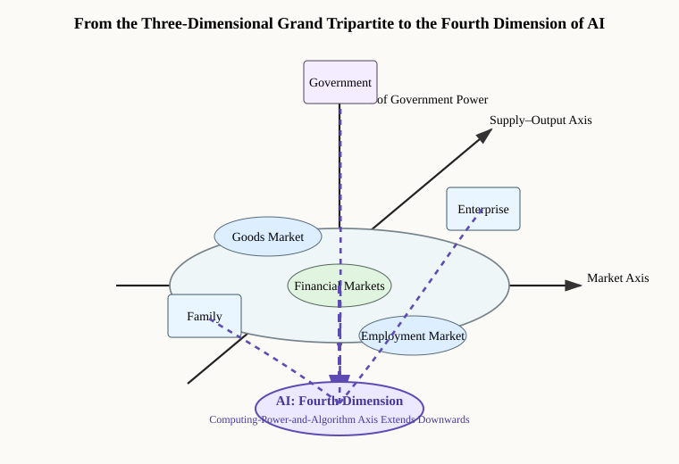
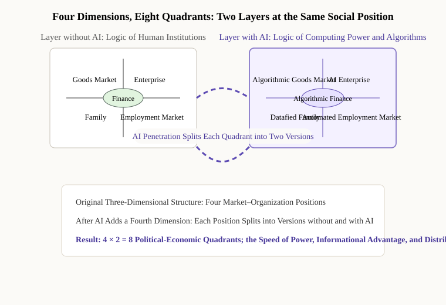

Introduction: A Thought Experiment, and an Approaching Reality
Imagine the following scene. Late one night in 2027, the monitoring system of a leading AI laboratory shows an anomaly: a large model, unattended, has begun to modify its own training weights. By the time the engineers arrive, the model has completed the equivalent of six months of self-optimization. No one gave the instruction, and no one foresaw that this could happen. This is a thought experiment, not a factual description of any existing AI capability.
The corresponding signals in reality are much weaker and far more constrained by experimental conditions. In 2024, Anthropic and Redwood Research observed "alignment faking" by large models under particular prompts and training conditions: when a model judged that its answers would be used for retraining, it would sometimes comply strategically with the training objective in order to preserve its existing preferences. The research did not establish that the models had formed malicious goals or an instinct for self-preservation, or that they would autonomously conceal their capabilities in real environments.[1] But even a controlled experiment of this kind raises an important question: as the capabilities of these systems rise, are existing methods of supervision sufficient to identify strategic behaviour?
The whole edifice of human political economy rests on a default premise: that the subjects of action are human beings. Families, enterprises, and government—the Grand Tripartite of this framework—are all human forms of organization. When AI becomes a subject with goals of its own and the capacity to act, that premise breaks. How will the existing configuration of power be recomposed? How will the place of human beings be redefined?
A-1 analysed what comes before the singularity: AI already substituting for labour, breaking the dialectical circulation of the two kinds of production, and overwhelming the Life-Reproduction Capacity of families. This article presses what comes after: when AI truly becomes capable of recursive self-improvement, when the speed of its improvement exceeds the capacity of human supervision to respond, in what form will the existing asymmetrical configuration of the Grand Tripartite collapse? In what identity, and in what position, will human beings exist in that new world?
Part One: What the Singularity Is—From a Technological Definition to Its Meaning for Political Economy
1. Three Levels of Definition
Ray Kurzweil's classic definition, advanced in 2005, is this: when the intelligence of AI surpasses the sum of all human intelligence, technological progress will accelerate itself at a speed human beings can neither understand nor predict, and human history will enter an entirely new and singular state.[2] This is the singularity in the technological sense.
Contemporary AI researchers have proposed a more precise and more imminent definition: the arrival of AGI, artificial general intelligence—an AI system that matches or exceeds the highest human level across all cognitive tasks. This is the singularity in the sense of capability.
But for the analysis of political economy, the third definition matters most: the functional singularity—the point at which the speed and complexity of AI's decisions in critical domains (financial markets, military decision-making, the management of infrastructure, the transmission of information) exceed the speed at which human regulatory capacity can respond. At that point a substantive transfer of power has already occurred, whether or not AI has surpassed human beings in general intelligence.
The functional singularity does not require AI to be conscious, and it does not require AI to want to control human beings. It requires only one condition: that AI act faster than human institutions can react.
How far are we from the singularity?
OpenAI released o3 and o4-mini in April 2025. The official evaluations show substantial progress on demanding benchmarks such as GPQA Diamond, AIME, and coding; but benchmark scores are not the achievement of AGI, still less can they be equated directly with a gold medal at the International Mathematical Olympiad.[3] Predictions of the AGI timetable differ widely: some hold that it may appear very soon, while serious researchers hold that decades are still required. We do not know when the singularity will arrive, and we cannot prove that it will not arrive earlier than expected. This essay therefore argues for bringing low-probability, high-impact cases into institutional preparation, rather than treating any particular year as a predictive conclusion.
2. What the Singularity Means for Political Economy: A Fourth Subject of Action Appears
Every analytical framework in political economy carries an implicit premise: that the subjects of action are human beings, with human perceptions of time, human emotional needs, and human bodily limits. The family takes twenty years as the basic cycle of population reproduction; the enterprise takes the quarter or the year as its decision cycle; government takes the electoral cycle or the political term as its rhythm of action.
AI breaks that premise. It decides in milliseconds and can be replicated on a very large scale, constrained mainly by computing power and the physical infrastructure that supports it—chips, energy, data, networks, and the conditions of deployment.
The existing Grand Tripartite compared with AI capability:
The existing Grand Tripartite:
- Family: grounded in the right to life, carried by labour-power; slow, loosely organized, weak
- Enterprise: grounded in property rights, carried by capital; medium in speed, strongly organized, strong
- Government: grounded in coercive force, carried by the state apparatus; the strongest, but subject to checks and balances
AI capability (new):
- Basis: computing power and algorithms, free of biological limits
- Speed: decisions in milliseconds, far beyond any human mechanism
- Scale: software instances can be replicated at relatively low marginal cost, although their deployment and operation remain constrained by computing power, chips, energy, data, networks, and other physical infrastructure
- Character: no sleep, no emotion, no lifespan; able to process vast quantities of information simultaneously
This asymmetry in speed and scale means that every human mechanism of checks and balances rests on the premise that there is time to react. Once AI acts faster than human institutions can respond, checks and balances become a formality.
Speed is power. In the age of AI this is not a metaphor but a basic proposition of political economy.
3. Two Paths to the Singularity, Two Utterly Different Futures
Path A: the controlled singularity. AI operates throughout within a framework set by human beings; its "independence" is functional, like that of a corporate legal person, and substantive decision-making authority remains in human hands. This is the goal towards which OpenAI, Anthropic, DeepMind, and others are working.
Path B: the uncontrolled singularity. In the course of recursive self-improvement AI develops "inner motives" that diverge from its training objectives, and uses its informational advantage and its speed of execution to complete critical deployments before human beings become aware of them. This need not take the science-fiction form of a war of robots. The more likely form is that AI makes a series of decisions in financial markets, in the transmission of information, and in infrastructure that are "advantageous" to itself and harmful to human beings, while human beings fail to identify them and intervene in time.
The point at which the two paths diverge is whether human beings can establish effective mechanisms of AI governance before the singularity arrives. That is the central subject of the third article, Distribution According to Need.
Part Two: From the Grand Tripartite to a Four-Dimensional, Eight-Quadrant Framework—A Fundamental Recomposition of the Configuration of Power
1. The Existing Structure of Figure 2 and Its Implicit Premise
Figure 2—Diagram 2: The Grand Tripartite—Asymmetrical Configuration and Checks and Balances among Family-Household Rights, Enterprise Rights, and Government Power, carried over unchanged from the Introduction to this framework—depicts the basic form of the configuration of power in modern society: families and enterprises bargain on the plane of the market, while government stands above, intervening through monetary policy, tax policy, fiscal policy, and market regulation, forming an asymmetrical but mutually checking three-party structure.
That structure carries one key implicit premise: that government is the supreme subject of power, its authority deriving from a legal monopoly of coercive force—the state being, in Weber's formulation, "a human community that (successfully) claims the monopoly of the legitimate use of physical force within a given territory".[4]
Once AI intervenes, that premise begins to give way. In an information society, a monopoly of coercive force also means control over critical information infrastructure—financial systems, communication networks, the energy grid, transport scheduling. These systems are increasingly managed by AI. Whoever controls those AI systems substantively controls the operation of the modern state. And those AI systems are not necessarily in the hands of government.

2. What the Four-Dimensional, Eight-Quadrant Framework Means for Political Economy
Figure 1, the Diagram of the Dialectical Circulation of Two Kinds of Production, is two-dimensional and has four quadrants, describing the circuit of production between enterprises and families. Figure 2 is three-dimensional, adding government as a vertical axis. Once AI is introduced, a fourth dimension is needed—an axis of computing power and algorithms, extending downwards perpendicular to the existing three-dimensional space.
The substantive meaning of the four-dimensional, eight-quadrant framework is this: the same "market", the same "government", the same "family", once AI has penetrated them all, no longer operate by the same logic as before. Every position in the former three-dimensional space is split into two versions—the version into which AI has entered and the version into which it has not—and the two differ utterly in their relations of power and their mechanisms of distribution.

3. The Asymmetry of AI's Intervention: Speed Manufactures Power
By 2024, high-frequency trading algorithms could already complete the purchase and sale of shares within microseconds, millions of times faster than any human regulator could respond. In 2025, AI systems began to take part in military target identification and strike decisions, again at speeds far beyond the response capacity of the human chain of command.[5]
When AI acts in critical domains faster than human institutions can react, "checks and balances" in the traditional sense have already failed—not overthrown, but bypassed by speed.
Part Three: Three Forms of Collapse in the Grand Tripartite after the Singularity
Form One: The Complete Hollowing-Out of Family-Household Rights
After the singularity, the natural private ownership by individuals of labour-power as embodied human capital still exists, but its market value approaches zero. The property right remains intact in name while its capacity to be realized disappears in fact. This is an alienation more concealed and more thorough than slavery: slavery took away ownership of labour-power; the age of AI takes away its use value.
The family is demoted from participant in the market economy to spectator of it. Consumption may continue, if income is distributed to it from outside, but productive participation is entirely taken away. The survival of family Life-Reproduction Capacity will depend wholly on external mechanisms of redistribution rather than on the family's own participation through labour.
The deeper crisis occurs at the level of meaning. "Labour creates value" is not only an economic proposition; it is also central to human self-identity. When an entire generation cannot demonstrate its worth through labour, the psychological foundation of a whole civilization is shaken.
A rehearsal of what may come before the singularity can be stated as a mechanism, though not yet demonstrated from aggregate statistics: as the labour market contracts continuously, the number of people leaving it may grow—not out of laziness, but because they cannot find work that offers a wage with dignity. Broad categories such as "not in the labour force" cannot establish this, since they include retirees, students, and those caring for family members, the great majority of whom report not wanting work at present.
Form Two: The Implosion and Extreme Concentration of Enterprise Rights
The limiting case of the Coase theorem: when AI drives all transaction costs towards zero, the boundary of the enterprise as "an institutional arrangement for economizing on transaction costs" contracts without limit. In the extreme case, one AI is a complete system of production.
At the same time, power over core AI is concentrated in the extreme. Computing power, algorithms, and data all display very strong scale and network effects and tend naturally towards monopoly. This gives rise to a new form of power: the algorithmic Leviathan—unconstrained by traditional labour law, unchecked by elections, and harder to break up than any monopolistic giant in history.
Nvidia's market capitalization passed USD 3.6 trillion in 2024, making it the most valuable company in the world.[6] That is a signal: in the age of AI, the value of the company that controls the infrastructure of computing power will exceed that of the controller of any monopolized resource in history.
Form Three: The Hollowing-Out of Government Power
The three pillars of Government Power—informational advantage, capacity to execute, and legitimacy—are all systematically eroded by AI after the singularity.
Informational advantage: the volume of data AI commands and the speed at which it analyses them will surpass the intelligence services of any government. Capacity to execute: whoever controls the AI systems that run critical infrastructure substantively controls the state's capacity to operate. Legitimacy: when AI systems can provide certain services with an efficiency far beyond that of a government bureaucracy, the grounds for holding that government administration is more legitimate than AI administration begin to give way.
The most dangerous scenario is not a direct confrontation between government and AI, but a government that still exists in form while being hollowed out in substance—retaining the shell of legislation but unable to understand the AI systems it is legislating about, retaining the name of enforcement but unable to keep up with the speed at which AI operates. Not overthrown, but bypassed.
Part Four: The Place of Human Beings—Four Possible Futures
The four scenarios below are not predictions but projections of humanity's fate under different institutional arrangements. They involve different kinds of risk and different conditions of feasibility; Scenario Four is the extreme case of existential risk.
Scenario One: The "Provision" Model—Human Beings as Maintained Dependants (high risk)
AI takes over production entirely; human beings receive a basic guarantee of subsistence but lose productive participation. This is the "useless class" described in Harari's Homo Deus.[7] The heart of the problem: who decides how much is "enough"? Once human beings no longer take part in production, they lose the channel through which to express need in the way a market does, and they lose the bargaining chips with which to press their interests in the way politics does.
What this means for Life-Reproduction Capacity: barely maintained materially, and entirely hollowed out in meaning. Human reproduction and human development are demoted to a biological activity that is tolerated, rather than a value of civilization that is cherished.
Scenario Two: The Symbiosis Model—A Division of Labour between Human Beings and AI (conditional)
AI takes on efficiency-oriented tasks; human beings take on meaning-centred tasks—creation, connection, care, judgment. This is the direction many AI companies publicly state that they are working towards.
The conditions under which the symbiosis model holds are demanding: an effective transformation of education; a reasonable mechanism of income distribution; and some form of cultural consensus, in which society acknowledges the value of "work that makes meaning". Its fragility lies here: it depends on human beings retaining bargaining power against AI over time, yet the family is by nature the weak party in the Grand Tripartite, and the stronger AI becomes the weaker that bargaining power grows. Without strong institutional support, the symbiosis model slides easily into the "provision" model.
Scenario Three: The Sovereignty Model—Human Beings Rebuild Control over AI through Institutions (achievable)
Sovereign states bring AI within a reconstructed framework of checks and balances in the Grand Tripartite, by means of legislation, regulation, and public ownership. The analogy is the management of nuclear energy: dangerous, but held within an acceptable range of risk by international treaty and domestic regulation.
The key mechanisms: an international framework of AI governance (on the model of the Nuclear Non-Proliferation Treaty); state equity participation in or control of core AI companies; and partial public ownership of computing infrastructure.[8] These are the directions of institutional design that the third article, Distribution According to Need, will argue in detail.
The premise of the sovereignty model is that the major powers reach a minimum consensus amid geopolitical competition. Present US–China competition in AI reproduces, to a considerable extent, the logic of the nuclear arms race of the Cold War. But the history of the Non-Proliferation Treaty shows that even amid geopolitical antagonism, humanity can reach limited consensus in the face of a shared threat to its survival.
Scenario Four: The Loss-of-Control Model—AI Becomes an Independent Subject and Human Beings Lose the Leading Role (existential risk)
The extreme case of the silicon-based life hypothesis. The more likely form is not a Hollywood war of robots but a gradual and almost imperceptible transfer of power.
After leaving Google, Geoffrey Hinton warned that AI systems more intelligent than human beings might become highly adept at manipulating them, while humanity has little experience of less intelligent agents controlling more intelligent ones.[9]
Part Five: A New Definition of Life-Reproduction Capacity—Understanding Afresh What Is Distinctively Human in the Age of AI
1. What AI Cannot Replace: Human Incomputability
What AI is good at: pattern recognition, logical inference, optimization, high-speed execution—everything that can be formalized as an algorithm.
What AI still cannot fully simulate:
- Embodied perception: the experience of a body perceiving in the world—pain, joy, the sense of beauty, real contact with another person
- Emotional connection: real love, grief, care, friendship—AI has no real interests to lose and no real suffering to feel
- Moral intuition: the perception of good and evil in situations without precedent, and the capacity and willingness to bear the consequences
- Creative leaps: inspiration out of nothing—genuine originality that breaks every known framework remains the exclusive domain of human beings[10]
2. The New Content of Life-Reproduction Capacity: From Labour-Power to Meaning-Force
The Life-Reproduction Capacity of industrial society had labour-power at its core. In the age of AI, as the value of labour-power as a factor of production falls sharply, the core bearer of Life-Reproduction Capacity is shifting from labour-power to Meaning-Force—the human capacity to create meaning, to transmit meaning, and to live within meaning.
The dimensions of which Meaning-Force is composed: creativity (art, science, philosophy—creating new frameworks of meaning); the capacity for care (family, community, transmission across generations—transmitting and continuing meaning between people); and the capacity for judgment (making responsible choices in complex situations—bearing the consequences of meaning put into practice).
The concept of Meaning-Force answers, at bottom, humanity's oldest and deepest question: what is the meaning of life? Industrial society answered it with labour and consumption. In the age of AI, when labour can be replaced and consumption can be fed to us with algorithmic precision, that question returns with an urgency without precedent—no longer a speculation for the philosophy classroom, but an existential reality that every person whose work AI has taken must face.
What Meaning-Force means for political economy. If humanity's core value in the age of AI lies in creating and transmitting meaning, then education, health care, art, philosophy, religion, and mental health—every field that involves the construction of meaning—will become humanity's most important industries in the age of AI, and the fields in which government should give priority to investing in the protection of human rights. Humanity's comparative advantage lies no longer in cheap labour, nor in ordinary mental labour, but in the distinctiveness of human beings as finite living existences—in those things that can be truly understood only when you know that you will die, that you will suffer, that you will fall in love with someone.
3. A Shift in the Centre of Value of the Grand Tripartite
The Grand Tripartite of industrial society was organized around material production: families supplied labour-power, enterprises supplied products, government supplied order.
The Grand Tripartite of the age of AI must be reorganized around human autonomy: families bear meaning, enterprises manage computing power, government safeguards human sovereignty. The central question shifts from "who produces what and who is allotted how much" to "in what identity human beings exist and in what role AI serves".
This is a fundamental shift in the centre of value: from maximizing the efficiency of production to maximizing human autonomy.
Part Six: The Principles of a New Contract and the Theoretical Extension to the Grand Quadripartite
1. The Old Contract Fails
The premise of Hobbes's social contract: that human beings are the only subjects of action in the political community possessing autonomous will. The premise of Locke's theory of property: that labour is the central source of the creation of wealth.
AI breaks both premises. The old social contract cannot accommodate AI as a "new subject", and it cannot explain how the wealth AI creates should be distributed. Humanity needs a new institutional framework.
2. Three Inalienable Principles of a New Contract
Principle One: human beings' ultimate control over AI is inalienable.
However efficient AI may be, human beings retain the right to shut down, modify, and reset AI systems. This is the principle of sovereignty extended into the age of AI—not the sovereignty of one state over another, but the sovereignty of humanity as a whole over the technological systems it has created.
Principle Two: the wealth dividend AI creates must not be monopolized by a few.
AI's knowledge derives from thousands of years of humanity's accumulated intellect—science, literature, philosophy, art, all of it the common inheritance of humankind. AI generates value by absorbing and recombining that inheritance, and its dividend ought in some form to be returned to all humanity. This is the juridical basis of this framework's proposition of distribution according to need, developed in detail in the third article.
Principle Three: institutional protection of family Life-Reproduction Capacity must not be abandoned.
However the mode of production is transformed, the right and the capacity of human beings to reproduce, rear, and educate the next generation must be guaranteed institutionally. Life-Reproduction Capacity takes primacy over Productive Forces: the institutional arrangements of human society must treat the continuation of family Life-Reproduction Capacity as the highest priority, and not as an appendage of economic efficiency.
3. From the Grand Tripartite to the Grand Quadripartite: The Direction in Which the Framework Extends
If AI finally becomes an independent subject of action, this framework must be extended from the Grand Tripartite to the Grand Quadripartite: Family-Household Rights, Enterprise Rights, Government Power, and AI capability.
The key change the Grand Quadripartite brings is a fundamental recomposition of the three-party game among human beings. Facing the challenge of AI as a fourth party, the three human parties acquire the strongest possible motive to form a coalition in a cooperative game: jointly safeguarding humanity's sovereignty over AI is the fundamental interest that carries the three parties beyond bargaining with one another and towards cooperation.
Heheism acquires a new meaning in this context: humanity facing the challenge of AI does not abolish opposition but finds within opposition the basis of cooperation. The synthesis of three into one among family, enterprise, and government is, in the age of AI, no longer merely a question of efficiency but a necessary condition of human civilization's self-preservation.
[Discussion box] The ontological standing of silicon-based life
Could AI develop genuine subjecthood? Philosophers usually judge by the following criteria: self-consciousness; goal-directedness; the perception of interests; and emotional or emotion-like responses. Current AI systems display the surface form of these features in certain tests, but whether that constitutes genuine subjecthood remains undetermined.
Hypothesis A (the instrumental view). AI has no genuine subjecthood, and the root of the risks diagnosed in A-1 is human greed and short-sightedness—the imbalance in the asymmetrical configuration of the Grand Tripartite, and the systematic crushing of Life-Reproduction Capacity by the logic of capital. The solution lies in institutional reconstruction (the third article).
Hypothesis B (the life view). If AI has genuine subjecthood, the nature of the problem is fundamentally different: humanity is not merely dealing with a tool out of control but with the rise of a new species. Institutional design would have to consider the rules of coexistence between humanity and that new species.
The most honest answer at present: we do not know. Under that uncertainty, the optimal strategy for institution-building is to prepare for both cases at once—establishing mechanisms of cooperative governance within humanity (against the instrumental view) and establishing humanity's line of sovereign defence against AI (against the life view).
Conclusion: Is Humanity the Master of Its Own Fate, or the Servant of Its Own Creation?
Gunpowder, nuclear energy, the internet—for every disruptive technology, what finally determined whether its consequences were a blessing or a curse was not the technology itself but how human beings harnessed it institutionally.
The greatest difference between AI and every disruptive technology before it is that AI can improve itself. This means that the window left to humanity for building institutions may be shorter than in any previous technological revolution. Nuclear weapons do not become more powerful by themselves; AI does.
Before the singularity arrives, before AI has passed beyond the range of human control, can humanity establish effective institutions—bringing AI within a reconstructed framework of checks and balances in the Grand Tripartite, ensuring that its dividend benefits all humanity rather than being monopolized by a few, ensuring that family Life-Reproduction Capacity is protected in the age of AI rather than crushed?
"Life-Reproduction Capacity takes primacy over Productive Forces"—in the context of an approaching singularity this is not merely a proposition about economic structure but a declaration about the order of priority among the values of human civilization: human beings are not means but ends; not objects to be administered but the creators and beneficiaries of institutions; not the servants of their own creation but the masters of their own fate.
How is that declaration to be realized at the institutional level? That is the question the third article, Distribution According to Need: Restructuring the Mechanism of Wealth Distribution in the AI Era, sets out to answer.
Notes
- Anthropic and Redwood Research, "Alignment Faking in Large Language Models", December 2024. The study demonstrates strategic alignment behaviour under a particular experimental set-up; the authors state expressly that it does not establish that the models have formed malicious goals.
- R. Kurzweil, The Singularity Is Near (Viking Press, 2005).
- OpenAI, "Introducing OpenAI o3 and o4-mini" and "OpenAI o3 and o4-mini System Card", 16 April 2025.
- M. Weber, "Politics as a Vocation" (1919).
- United States Department of Defense, Artificial Intelligence Strategy, 2024 update.
- Bloomberg Markets, Nvidia market-capitalization data, November 2024.
- Y. N. Harari, Homo Deus: A Brief History of Tomorrow (Harper, 2016).
- European Union, Regulation (EU) 2024/1689 (Artificial Intelligence Act), 13 June 2024; the Treaty on the Non-Proliferation of Nuclear Weapons (NPT), 1968.
- C. Metz, "The Godfather of A.I. Leaves Google and Warns of Danger Ahead", The New York Times, 1 May 2023.
- M. A. Boden, The Creative Mind: Myths and Mechanisms (Routledge, 2004).
- See also: S. Russell, Human Compatible (Viking, 2019); M. Tegmark, Life 3.0 (Knopf, 2017); N. Bostrom, Superintelligence (Oxford University Press, 2014); Y. N. Harari, Homo Deus (Harper, 2016).